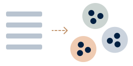
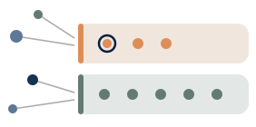
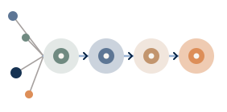
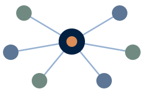

Selected Work
Work that shows how I design, align people around decisions, and build systems that hold up at scale. The projects cover hands-on product design, portfolio strategy, quality systems, and team capability across enterprise and higher education.
Highlighted Work

Designed and shipped program discovery that absorbed catalog growth
I owned the interaction model and responsive UX, then directed two engineers through implementation across nine departments. The catalog grew from 16 to 43 certificates without a redesign.

Gave leaders a way to prioritize risk across ~80 touchpoints
I built the inventory, assessment, and risk model, then interviewed five directors to shape baseline and funded support.

Turned a one-specialist queue into a quality decision system
A risk-matched review path, shared severity language, and training loop helped 16 designers catch and prevent recurring accessibility issues.

Built local accessibility capability for a growing design organization
A two-year program trained 16 designers, grew the named peer champion group from 2 to 5, and gave teams a clear path for harder questions.
Speaking & Enablement
Invited talks and teaching on experience strategy, design systems, governance, and accessibility. I use them to give teams and leaders a shared direction they can act on.
Additional Work
-
AI-Assisted UX Governance & Accessibility Review System
Prototyping AI support for design-quality and review workflows
A practical prototype for using AI to support design quality, governance, and review.
-
Function Health · Accessibility Opportunity Brief
Making personal health data more accessible and trustworthy
An opportunity brief exploring how the experience could better support clarity, trust, and assistive-technology use.
-
University-Wide Design System
Built a shared design system across a decentralized university
A shared design system, prototypes, web components, and governance model for a decentralized environment.
-
Hedgerow Pottery Identity Expansion
Turned a fragile logo file into a production-ready identity system
Accessible standards, flexible assets, and practical guidance a small client could actually use.
-
Housing Website Accessibility & Design Feedback
Improved a live site while building lasting accessibility awareness
Accessibility reviews and design feedback that improved the experience and left the team more capable.